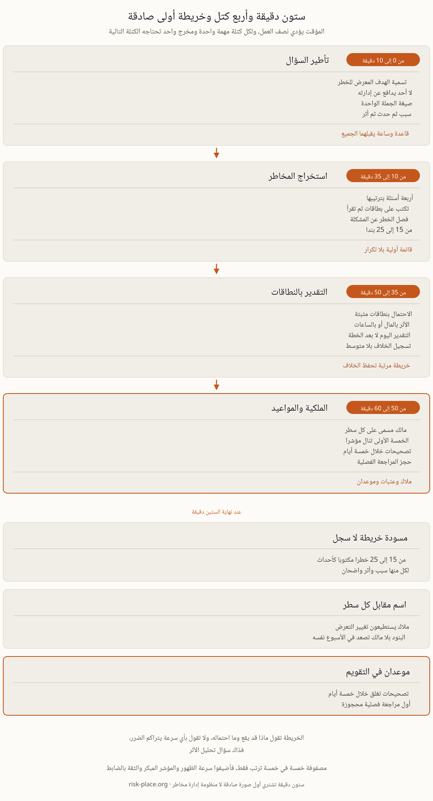

لا تحتاجون منهجية لتبدأوا، بل تحتاجون الأشخاص الصحيحين في غرفة فيها جدار ومؤقت. ادعوا من يديرون العمل فعلا، أي التشغيل وتقنية المعلومات والمالية والمشتريات ومن يتولى شؤون الموظفين والمنشآت، وأضيفوا إليهم من سيملك السجل بعد انتهاء الجلسة. والعدد العملي من خمسة إلى ثمانية أشخاص، فدون أربعة تحصلون على رؤية مدير واحد للشركة كلها، وفوق عشرة لا يقول أحد الكلمة غير المريحة. لا لجنة إدارة بكاملها، ولا نائب يرسل بدل صاحب القرار، ولا حضور بصفة مراقب. وافتتحوا الجلسة بقاعدة واحدة تقال بصوت مسموع، لا أحد هنا يدافع عن إدارته، وكل ما يطرح في الساعة القادمة مساهمة لا اعتراف. ثم التزموا بالساعة، عشر دقائق للتأطير وخمس وعشرون لاستخراج المخاطر وخمس عشرة للتقدير وعشر لإسناد الملكية. فالجلسات التي تدار بلا مؤقت تنفق أربعين دقيقة على أول خطر يحمل أحد الحاضرين رأيا قويا فيه.
معظم ما تنتجه الغرفة في البداية ليس مخاطر، وفرز ذلك مباشرة أثمن ما يفعله من يدير الجلسة. المشكلة قائمة بالفعل، مثل أن تكون النسخة الاحتياطية قد فشلت مرتين هذا الربع، واحتمالها يساوي واحدا، فمكانها سجل إجراءات بتاريخ محدد. والنتيجة هي ما تنتجه المخاطر، من خسارة إيراد وغرامة تنظيمية وضرر بالسمعة، وكل بند تقريبا يؤدي إليها، فإدراجها كبنود مستقلة يضاعف حجم الخريطة دون أن يضيف قرارا واحدا. أما الخطر فحدث مستقبلي له سبب وأثر، يكتب بحيث يستطيع شخص عاقل أن يراهن على وقوعه من عدمه. وأصروا على هذه الصيغة فتنكمش القائمة إلى نصفها خلال خمس دقائق. فكلمة "السيبراني" فئة وليست خطرا، أما "برمجية فدية تشفر قاعدة بيانات نظام الموارد فيتوقف تنفيذ الطلبات أكثر من يوم" فخطر، لأنكم تستطيعون الجدال في احتماله وفي كلفته معا. وراقبوا العدد كما تراقبون الصياغة، فمن خمسة عشر إلى خمسة وعشرين خطرا مسمى خريطة أولى صالحة للاستعمال، أما مئتا سطر فجرد لن يحافظ عليه أحد بعد الربع الثاني.
اطرحوها بهذا الترتيب، فالترتيب نفسه يؤدي معظم العمل.

قدروا الاحتمال والأثر بنطاقات، وأعطوا كل نطاق كلمات تستطيع الغرفة اختبارها. والاحتمال يعمل أفضل ما يكون بأربع درجات مثبتة، وقع لدينا من قبل، ووقع لدى شركة مثلنا، ومعقول لكن لم يره أي منا، وسيكون سابقة في القطاع كله. أما الأثر فلا بد أن يثبت بشيء قابل للعد، مالا خلال مدة محددة أو ساعات خدمة مفقودة، لأن كلمة "مرتفع" تعني عند كل مشارك ما يفترضه في نفسه. ثم أربع قواعد. قدروا التعرض كما هو اليوم بالضوابط التي تعمل فعلا لا كما سيكون لو نجحت الخطة. وامنحوا كل خطر تسعين ثانية. وحين يختلف شخصان بنطاقين فالخلاف نفسه هو النتيجة، فسجلوا الرقمين ولا تأخذوا متوسطهما أبدا، لأن متوسط ثمانية واثنين لا يصف رأي أحد في الشركة. وقدروا في مقابل شيء ما، فالخريطة التي لا تشير إلى شهية المخاطر ترتب المخاطر ولا تقول لكم أيها غير مقبول.
والمصفوفة ذاتها أداة تواصل جيدة وأداة قرار رديئة لثلاثة أسباب تستحق المعرفة قبل عرضها على مجلس الإدارة. فهي تضرب درجات ترتيبية كأنها أعداد حقيقية، فأربعة في اثنين واثنان في أربعة ينتجان ثمانية، مع أن كارثة نادرة وإزعاجا متكررا يستدعيان إدارة مختلفة تماما. وهي تضغط الذيل، لأن كل ما يتجاوز النطاق الأعلى ينهار إلى خمسة، فيجلس الحدث الذي ينهي الشركة في المربع نفسه مع الحدث الذي يفسد ربعا واحدا، وهي بالضبط المنطقة التي يحتاج فيها المجلس إلى تمييز دقيق. وهي تسجل أثرا واحدا لكل خطر بينما للمخاطر الحقيقية مدى من النتائج. وثلاث إضافات زهيدة تصلح معظم ذلك. أضيفوا سرعة الظهور بدقائق أو أيام أو أشهر من الإنذار، لأن زمن الإنذار هو ما يحدد نوع الضابط الذي يستحق الشراء. وأضيفوا عمودا عنوانه "كيف سنعرف" يحمل المؤشر المبكر، وهنا تتحول الخريطة إلى متابعة مؤشرات مخاطر، وتصميم تلك العتبات مشروح في صفحة المؤشرات التي تغير القرار. وأضيفوا الثقة بالضابط بثلاث درجات بحسب تاريخ آخر اختبار له. ولونوا الخريطة بالثقة بالضابط بدل الدرجة، فيتغير الحوار خلال عشر ثوان.
خريطة المخاطر وتحليل أثر الأعمال يجيبان عن سؤالين مختلفين، ولا يغني أحدهما عن الآخر. فالخريطة تنظر إلى التهديد وتعمل بالاحتمالات، أي ما الذي قد يصيبنا وما احتماله وما حجمه. أما تحليل الأثر فينظر إلى العملية ويعمل بالزمن، أي إذا توقف هذا النشاط فبأي سرعة يتراكم الضرر، ومن ثم خلال كم من الوقت يجب أن يعود، أيا كان سبب التوقف. ولهذا تخرج أهداف زمن التعافي من تحليل الأثر لا من درجة خطر، ولهذا قد تملك شركة خريطة ناضجة وهي لا تعرف ما الذي تعيده أولا. والوثيقتان تلتقيان في نقطة واحدة، فالخريطة تحدد أي التهديدات يستحق سيناريو مختبرا، والتحليل يحدد ما يجب أن يحققه أي تعاف. ابنوهما منفصلين ثم طابقوا بينهما مرة كل عام. ودليلنا في تحليل أثر الأعمال يغطي النصف الآخر من هذه الثنائية، وصفحة ما هي إدارة استمرارية الأعمال تبين أين يقع كل منهما.
الساعة تنتج مسودة لا سجلا، والفرق بينهما يحسم في الأسبوع التالي. أعطوا كل بند مالك مخاطر بالاسم، شخصا يستطيع فعلا تغيير التعرض، لا إدارة كاملة ولا وظيفة المخاطر التي تملك المنهجية لا المخاطر نفسها. وعمموا الخريطة مع مهلة خمسة أيام عمل للتصحيح، فالناس يتذكرون الخطر الرابع في طريق العودة إلى البيت. وحولوا الخمسة الأولى إلى مؤشر بعتبة وإجراء متفق عليه سلفا. واحجزوا المراجعة الآن، خمسا وأربعين دقيقة كل ربع مع الأشخاص أنفسهم، فهذه هي الآلية التي تبقي الخريطة حية. وصعدوا البنود التي لا يريد أحد ملكيتها في الأسبوع نفسه بدل ترك الخانة فارغة، فالخطر بلا مالك يقع عادة بين مديرين اثنين، وهذه هي المخاطر التي تتحقق فعلا. وتحويل الخريطة الأولى إلى سجل محافظ عليه، بملاك وعتبات ودورة مراجعة تصمد أمام ضغط العمل اليومي، موضوع الوحدة M2 من برنامج ERGP.
ندقق نظام الاستمرارية لديكم مقابل AE/SCNS/NCEMA 7000 والأيزو 22301، ثم نرفع المقاييس التي تقرر البقاء، مع مسوحات المخاطر والمنهجية والتدريب في الموقع حيث تحتاجون.
كيف يعمل التدقيق ←